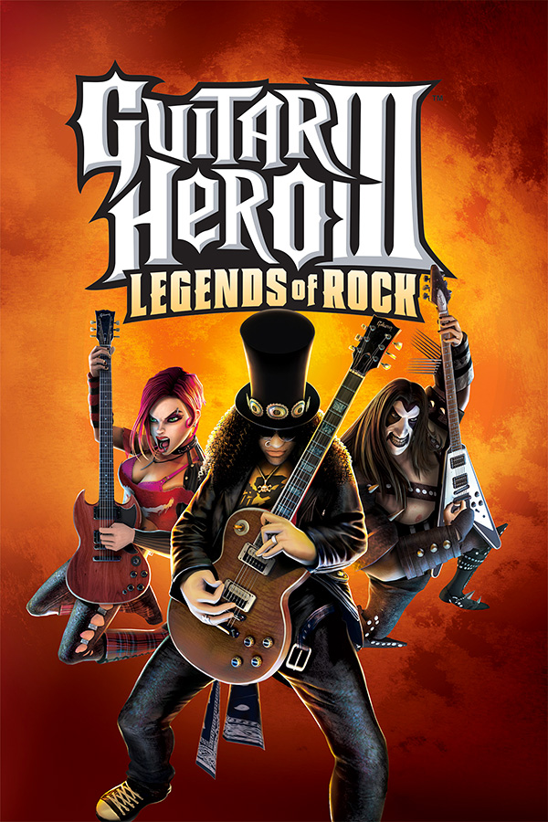

|  | |
| Playtime | Not Played |
| Last Activity | Never |
| Added | 4/24/2025 1:41:33 |
| Modified | 4/30/2025 0:06:12 |
| Completion Status | Not Played |
| Library | Playnite |
| Source | |
| Platform | $PC (Windows) |
| Release Date | 11/13/2007 |
| Community Score | 84 |
| Critic Score | 84 |
| User Score | |
| Genre | Music/rhythm |
| Developer | Neversoft |
| Publisher | Activision Aspyr Media |
| Feature | Controller Support Full Controller Support Multiplayer Single Player |
| Links | PCGamingWiki Official site HowLongToBeat IGDB StrategyWiki MobyGames Wikipedia WSGF |
| Tag | Cinematic camera Direct control Real-Time Stylized |
Guitar Hero III: Legends of Rock is a 2007 rhythm game developed by Neversoft and published by Activision. It is the third main installment and the fourth overall installment in the Guitar Hero series. It is the first game in the series to be developed by Neversoft after Activision's acquisition of RedOctane and MTV Games' purchase of Harmonix, the previous development studio for the series. The game was released worldwide for the PlayStation 2, PlayStation 3, Xbox 360, and Wii in October 2007. Aspyr published the Microsoft Windows and Mac OS X versions of the game, releasing them later in 2007.
Guitar Hero III: Legends of Rock retains the basic gameplay from previous games in the Guitar Hero series, in which the player uses a guitar-shaped controller to simulate the playing of lead, bass, and rhythm guitar parts in rock songs by playing in time to scrolling notes on-screen. The game, in addition to existing single-player Career modes, includes a new Co-Op Career mode and competitive challenges that pit the player against in-game characters and other players. Guitar Hero III: Legends of Rock is the first game in the series to include an online multiplayer feature, which is enabled in the PlayStation 3, Wii and Xbox 360 versions. Initially the game offers over 70 songs, most of which are master tracks. The PlayStation 3 and Xbox 360 versions feature the ability to download additional songs. The musicians Tom Morello (of the bands Rage Against the Machine and Audioslave) and Slash (of Guns N' Roses and Velvet Revolver) make appearances both as guitar battle opponents and playable characters in the game. The PlayStation 3, Xbox 360 and Microsoft Windows versions also include Bret Michaels (of Poison) as a non-playable character.
Critics and fans acclaimed the game, but reviewers noted a difference in the game's style compared to previous installments, associating it with it being Neversoft's first development attempt with the series. The game is often cited to be too difficult, creating "walls of notes" that are difficult to complete, and led to alterations in note placement for future games in the series. According to Activision, Guitar Hero III: Legends of Rock is the best-selling video game of 2007, both in terms of units sold and revenue earned, and that it is the first single retail video game to exceed one billion dollars in sales. It is one of the best-selling third-party games available for the Wii.
Gameplay for Guitar Hero III: Legends of Rock is similar to previous titles in the series. The player hits notes as they scroll towards the bottom of the screen in time with music to maintain their performance and earn points. To hit notes using the guitar controller, the player hits the strum bar while holding down the corresponding colored fret buttons. If the player uses the standard controller instead of the guitar controller, the correct buttons need to be pressed, but the player is not required to strum. Notes can be sustained, during which the fret button is held until the note is complete, and they can also form two- to four-note chords. The game simulates hammer-ons and pull-offs for sections with a rapid series of notes, allowing the player to forgo strumming on specifically marked notes. Missing a note causes the performance meter to drop. When the meter drops too low, the player fails the song, represented in-game by the band being booed off the stage. A string of 10 consecutive correct notes earns a multiplier to increase the player's score, which can occur up to four times. Special sections, marked by starred notes, can be used to build Star Power. When the player has enough Star Power, they can activate it and further double the scoring multiplier either by tilting the guitar controller vertically or by pressing a specific button on the controller. While Star Power enabled, the performance meter increases more quickly when a correct note is hit, and missing notes have a decreased penalty. Guitar Hero III: Legends of Rock contains four difficulty levels: Easy, which uses three of the fret buttons; Medium, which makes use of four of the fret buttons; Hard, which uses all five fret buttons; and Expert, which adds no new fret buttons, but increases the number of notes and the general difficulty.
During a song, avatars of the virtual band, including one character selected by the player, will perform in time to the music, responding appropriately to the unleashing of Star Power or the failing of a song. Guitar Hero III: Legends of Rock has a cast of thirteen characters, which the player can further customize with alternate guitar skins and stage outfits using in-game money earned from successful performances. The player can access the game's three boss characters—Tom Morello, Slash, and Lou the Devil—as playable characters once they have completed their respective Boss Battles in Career mode. Although Bret Michaels appears in the game and sings specific songs, he is not a playable character in the game.
The single-player Career mode in Guitar Hero III: Legends of Rock features 8 tiers with 42 songs total. Within each tier, the player completes a number of songs, the number depending on the selected difficulty level, before they are offered an encore performance of one additional song and complete the tier. After a tier is complete, a new tier is introduced. Guitar Hero III: Legends of Rock includes Career mode boss battles based on the game's multiplayer Battle mode; at three points during the Career mode, the player must compete against a boss character to progress. Each successfully completed song earns in-game money that the player uses at the game's store to unlock new characters, outfits, guitars and finishes, bonus songs, and videos. Additionally, completing a song in Career mode unlocks it for play in all other game modes.
Guitar Hero III: Legends of Rock is the first game in the series to feature a storyline for the Career mode, portrayed through animated cartoon scenes between venues produced by Titmouse, Inc. Studios. The band starts as a neighborhood sensation, and after signing a recording contract with a shady music producer named Lou, gains worldwide fame, performing at venues around the world. However, when the band attempts to break the contract, Lou reveals himself to be the Devil, and their recording contract is actually a contract for their souls. Lou forces the band to play against him in the netherworld at "Lou's Inferno", but the band is able to succeed, forcing Lou to break the contract. The band returns to the mortal world as "Rock Legends".
Two players using the same console can participate in Co-Op Career mode, with one player on lead guitar and the other on bass or rhythm guitar depending on the song. There are six tiers of songs which the players complete in the same manner as the single player Career mode. The encore song for each tier is unique to Co-Op Career mode. There are no boss battles in this mode. The animated Co-Op storyline portrays the vocalist and drummer, who are looking for a guitarist and bassist. After their first performance, the drummer decides to make a video of the band. The video helps boost the band's popularity, and they soon earn a gig in Japan. The band is forced to take a three-month hiatus to reconcile their differences of opinion on the band's future. Their comeback performance starts a neighborhood fire and places the band in jail. Lou arrives, offering the band to be freed from jail if they perform for the inmates. However, after their performance, the band finds themselves in Lou's Inferno, and is forced to play a live show for the netherworld in order to return to the mortal world.
The Xbox 360, PlayStation 3, and Wii versions of Guitar Hero III: Legends of Rock feature online competitive play, in which the player can compete against another user through the console's network service. There are three modes of online play, Face Off, Pro Face Off, and Battle mode. Face Off challenges are score attack modes introduced in Guitar Hero II where two players attempt to gain the best score on a given song; in the standard Face Off challenge, the players may select different difficulty levels, while Pro Face Off requires the players to play at the same difficulty.
The Battle mode in Guitar Hero III: Legends of Rock is a competitive mode between two players either locally or over network play. Two players compete against each other and attempt to make their opponent fail or lose by successfully playing Battle Power sequences, which replaces Star Power sections, to earn attacks that can be used against the opponent. Players can store up to three attacks at a time, and release them by using the same methods used to trigger Star Power in normal gameplay. The resulting effect may either make the song more difficult for the other player by adding additional notes or partially displaying the gem tracks, or may force the opponent to perform special actions to clear the effect, such as by pressing a fret button down repeatedly in response to a broken guitar string effect. Should a player fail the song, the other player wins. If neither player fails the song, they compete in a Sudden Death segment, in which the only attainable Battle Powers are Death Drain attacks, which inevitably makes the opponent fail by draining his or her Rock Meter.
Guitar Hero III was bundled with newly developed wireless guitar controllers for the console releases, though previous controllers from other Guitar Hero games could be used. Lee Guinchard, RedOctane's vice president of hardware, stated that wireless controllers were the "first, foremost consideration" for the game. The Xbox 360 and PlayStation 3 version of the controller was modeled after a black Les Paul guitar, with faceplates that can be swapped out. The PlayStation 3 version requires a dongle to achieve wireless capabilities. The Wii version is also a Les Paul design, but features a special slot to insert the Wii Remote into. This slot allows the game to offer several features exclusive to the console, such as by using the internal speaker and rumble on the Remote to provide feedback on missed notes and Star Power. The PlayStation 2 guitar is based on a Kramer Striker model, and also uses a dongle to achieve wireless functionality. All models features a detachable guitar neck that would make it easier to transport the controller. The PC and Mac versions of the game are bundled with the same USB-based Gibson X-plorer model that shipped with Guitar Hero II.
Activision purchased RedOctane in 2006 for $100 million to achieve "an early leadership position in music-based gaming". In September of that year, MTV acquired Harmonix, the developer of all Guitar Hero games up to that point; this purchase would later lead to the development of the competing music-game series, Rock Band. Without Harmonix's availability, Activision selected Neversoft to develop Guitar Hero III: Legends of Rock. Neversoft president Joel Jewett stated his company was asked to develop the game because of a conversation that Jewett had with RedOctane's founders Kai and Charles Huang at the 2006 E3 Convention, in which Jewett mentioned how the first Guitar Hero game helped reduce the stress in the Neversoft offices during their development of Tony Hawk's Project 8. Several months later, Jewett was contacted by the Huangs, asking if Neversoft wanted to work on Guitar Hero III: Legends of Rock. Dusty Welch, head of publishing at RedOctane, recognized Neversoft had a "10-year track record of launching a game every single year and being in the top of the charts" and felt that the development group "brought a better and deeper sense of music sensibilities" to the series. Despite the experience from the previous games, Alan Flores, head of development at Neversoft, commented that the game was "deceptively simple" and that it took much work for their 30-person team to recreate the gameplay for Guitar Hero III. Though they "wanted to take the Guitar Hero experience to the next level" by adding additional instruments in the same manner as Rock Band, they opted to focus on perfecting the guitar gameplay. In 2010, Activision CEO Bobby Kotick stated that they believed Neversoft would help them to develop great games for the series, but has since come to regret their failure to seek Harmonix for further development responsibility and believed this would have been a better move for both companies.
The note tracks, on-stage motions of the band, and stage lighting and effect synchronization were created by the same team of developers who were all musicians and had previous experience in note tracking either from other music video games or from MIDI tracking. The note tracks were developed by placing notes in time with the song; for sections that had difficult parts to track within the game's engine, they opted to use sequences of notes that would seem to the match the music but still be playable. Hammer-ons and pull-offs ("HOPOs") for the previous Guitar Hero games were automatically placed by the software; in this iteration, the engine was designed to allow manual placement of HOPOs to make it easier to create certain effects in songs, such as sustained string bends. Character animations were selected from several made available by the animation team, while stage lighting and effects were selected to mimic those used in live performances from YouTube or from concert appearances. A separate team came up with the concepts for the various stages and arenas in the game. The team wanted to keep the same art style as the previous Guitar Hero games but add "a certain spark" to improve upon previous designs. Once a stage idea was brainstormed, the team sought visual references from real stages to expand upon, and a 2D drawing of the envisioned stage was prepared for review and to remain a constant goal of the stage design. From that, a "pop up" three-dimensional version of the stage was created, and elements from the 2D concept art were added to determine the appropriate placement of set decorations. This team worked with the animation department to place the band members, stage lighting, and other effects in the game before the final 3D version of the stage was completed. The final stages included several animated elements to help further bring the stage to life.
For the game's characters, the developers intended to keep the comical looks from the previous games, but they decided to update their appearances with realistic materials and textures to take advantage of the more powerful level of graphics capabilities of seventh-generation consoles. The designers first drew character sketches to determine the characters' looks and clothing, creating a main and an alternate outfit for each character, which were then made into reference artwork. Afterward, low-level meshes for each character were created, with details added with Zbrush, resulting in characters that, before being scaled down for the game environment, had more than six million polygons. Texture of Couches and pixel shaders were added using the team's previous work on Tony Hawk's Project 8 to match the style of earlier Guitar Hero games. Unlike the Tony Hawk games, each character in the game was given a unique skeleton to match their variations in sizes and shapes, allowing the animators to create unique moves for individual characters. Guitar Hero III: Legends of Rock introduces three new characters modeled after real-life musicians. Slash, Tom Morello, and Bret Michaels, each performing one or more songs from their past recordings. All three were brought into the game using motion capture from the Motion Analysis Corporation.
Guitar Hero III: Legends of Rock features 73 playable songs; 42 are part of the main setlist, 6 are exclusive to the Co-Op Career mode, and the remaining 25 are bonus tracks. In total, 54 of the game's songs are master recordings. In addition, the Career mode includes three guitar battles, one against each boss: Slash, Tom Morello, and Lou the Devil. Slash and Morello both wrote and recorded original battle music for the game. Guitarists Steve Ouimette, Ed DeGenaro and Geoff Tyson play as Lou the Devil for the final battle, and re-recorded a metal guitar version of "The Devil Went Down to Georgia" for that purpose. The soundtrack features songs such as "Paint It Black" by The Rolling Stones, "Cherub Rock" by The Smashing Pumpkins, "Sabotage" by Beastie Boys, "The Metal" by Tenacious D, "My Name is Jonas" by Weezer, "Rock and Roll All Nite" by Kiss, "School's Out" by Alice Cooper, "Talk Dirty to Me" by Poison, "Slow Ride" by Foghat, "Barracuda" by Heart, and "Down 'n Dirty" by L.A. Slum Lords. It also features re-recordings of "Anarchy in the U.K." by Sex Pistols and "Cult of Personality" by Living Colour specifically for Guitar Hero III: Legends of Rock, as the original master tracks could not be found. This game is the second game in the series to feature a bonus track (The Stone Roses' "She Bangs the Drums") that is not an original recording. The first being a remake of "Drink Up" performed by Ounce of Self on Guitar Hero II.
The game also supports downloadable tracks for the Xbox 360 and PlayStation 3 versions; several free and for-cost downloadable songs and song packs are available on the PlayStation Store. They are unavailable for purchase on the Xbox 360 due to the Xbox Live Marketplace being shut down on July 29, 2024.
In July 2008, Activision announced that it would release downloadable content for the Wii in the first quarter of 2008, but eventually was unable to do so because of limitations with the Wii's internal memory storage, an issue that was overcome in the sequel, Guitar Hero World Tour. When heavy metal band Metallica released their album Death Magnetic on September 12, 2008, it was also made available as a downloadable song pack for Guitar Hero III: Legends of Rock, Guitar Hero World Tour and the 2009 spin-off Guitar Hero Metallica. In addition, the compact disc soundtrack for the game offers a code used to redeem three exclusive playable tracks on the Xbox Live Marketplace.
Activision's original announcement of Guitar Hero III: Legends of Rock indicated a planned release in their 2008 fiscal year, ending on March 31, 2008.; RedOctane later clarified a release in the last quarter of 2007, and further revealed that all versions of the game would feature wireless controllers as well as online multiplayer and downloadable content. The game was officially announced by Activision and RedOctane on May 23, 2007, for the PlayStation 2, PlayStation 3, Wii and Xbox 360. Budcat Creations ported the game to the PlayStation 2, and Vicarious Visions ported it to the Wii. In September 2007, Aspyr announced they would be publishing Guitar Hero III: Legends of Rock for the Microsoft Windows and Mac OS X ports. Demos of Guitar Hero III: Legends of Rock appeared in Tony Hawk's Proving Ground for the Xbox 360 in the Xbox Live Marketplace, and from the Internet as an ISO image. The demo features five songs ("Lay Down", "Rock You Like a Hurricane", "Even Flow", "Hit Me with Your Best Shot", and "The Metal") played within the Desert Rock Tour venue. As shipped, the game did not offer offline Co-Op Quickplay mode, a feature that was included in Guitar Hero II. This mode was added to the Xbox 360 and PlayStation 3 versions via a patch.
Activision called Guitar Hero III: Legends of Rock its "largest product launch ever", selling more than 1.4 million copies, and making over $100 million in its first week of release in North America; another 1.9 million copies were sold in the following month. Subsequently, the company was concerned that they were unable to meet the game's demand for the 2007 holiday season. As of July 15, 2008, the game has sold more than eight million copies. During the first seven months of 2008, the game sold 3.037 million units in the United States, 412,000 in the United Kingdom, and 26,000 in Japan, for a total of 3.475 million units, according to the NPD Group, GfK Chart-Track, and Enterbrain. More than two million copies of the game were sold for the Wii platform, making it the best-selling third-party title for the platform. Game sales during the first 12 months after the game's release were over $750 million. At the 2009 Consumer Electronics Show, Activision CEO Mike Griffith stated that Guitar Hero III: Legends of Rock is the first retail video game to exceed one billion dollars in sales. According to accumulated data from NPD Group in January 2010, Guitar Hero III is the second best-selling video game in the United States since 1995, following Wii Play. In March 2011, the title had become the top selling game with $830.9 million in lifetime sales.
Guitar Hero III: Legends of Rock received acclaim from critics and fans, although it scored lower than its predecessors on review aggregator Metacritic. The Gibson Les Paul controller included with the game's bundled version received particular praise. GameSpy, in a review of the four console versions, favorable reviewed the new controllers, and called the Wii guitar the best guitar peripheral that they had seen, praising the vibration option.
Several reviews criticized the changes made to Guitar Hero III: Legends of Rock compared to previous games in the Guitar Hero series. IGN's review of the Xbox 360 and PlayStation 3 versions considered the game a "pretty safe effort" from Neversoft, doing little to change the game due to it being their first time working on the series. They also criticized the lack of customizable characters. IGN's review of the Wii version described the game's presentation and art direction as feeling "forced", and, as a result, less visually appealing than previous installments. GameSpy criticized some of the difficulty tweaks in the game, stating that "Medium simply feels like Hard-minus-the-orange-button," and that the Star Power phrases were too long, comparing the overall game to a "trial by fire" in contrast to the previous games in the series. They were critical of the dongle approach used for the PlayStation 3 controllers, and failings in the online support for the PlayStation 3 version. They also stated that the PlayStation 2 version received "the short end of the stick" because of a lack of online play. GameSpot criticized the game for its "heavy dose of in-game advertising." Official Xbox Magazine also criticized the game for being "too competitive", a facet not readily found in the previous games. The PC version has been criticized for its high system requirements, and for lag and slowdown problems even on high-end systems.
During the 11th Annual Interactive Achievement Awards, Guitar Hero III received nominations for "Family Game of the Year" and "Outstanding Achievement in Soundtrack" by the Academy of Interactive Arts & Sciences.
Recognizing the game's popularity, Guinness World Records created a category for the Highest Score for a Single Song on Guitar Hero III: Legends of Rock in its Gamer's Edition, using the song "Through the Fire and Flames", noted as the most difficult song in the game. The record has been traded back and forth between Chris Chike, who also won the 2008 Play N Trade National Guitar Hero III Tournament, and Danny Johnson, the present holder of the record. Both Chike and Johnson have completed the song without missing a note, documenting their performances on YouTube, though both Chike and Johnson have hit 100% of the notes at an official event leading to a hard world record breaker.
In November 2010, Axl Rose sued Activision for $20 million for misuse of Guns N' Roses music and its musicians (specifically Slash) in Guitar Hero III. In the lawsuit, Rose claims that when he learned that a Slash-like character and other Velvet Revolver songs would be included in Guitar Hero II, he refused to allow Activision to use "Welcome to the Jungle" within Guitar Hero III, nor promotional images of Slash that had already been created. According to Rose's claims, Activision stated that these would only be used as promotional material for a trade show, but ended up using them within the game. Furthermore, Rose asserts that Activision had used "Sweet Child o' Mine", which was only licensed for use on Guitar Hero II, for promotional material within Guitar Hero III. The judge in the case allowed the trial to move forward after an initial hearing in March 2011. A jury trial was expected to start in May 2012.
At initial hearings in August 2012, the judge dismissed a fraud claim made by Rose, considering that it took three years for Rose and his publisher Black Frog Music to file these claims after the release of the game, an excessively long time for such a claim. The judge maintained the likelihood of the breach of contract argument, setting a jury trial to likely occur in early 2013. In January and February 2013, the judge dismissed the case, indicated that the lateness of the filing of the lawsuit, about three years since the release of the game, gave him grounds to throw out the suit, though Rose stated that the delay was due to promises made by Activision for a Guns N' Roses-themed game as compensation for the violation of contract terms.
Although the Wii version of the game was advertised as supporting Dolby Pro Logic II, players reported that the game would output audio in neither Pro Logic II nor stereo, providing only mono sound. Activision had offered a free replacement remastered game disc that corrects this issue for North American and European releases. Later, Activision further extended the replacement program to include a full refund of the game's purchase price as an alternative to obtaining a replacement disc. A class-action lawsuit over the mono sound issue was settled out of court, and Activision agreed to ship free faceplates for the Les Paul guitar controller to those who requested a replacement disc. Additionally, during the first few days of the game's release, players experienced difficulties uploading their scores to the official Guitar Hero website. Neversoft attributed the problem to "heavy amounts of traffic".